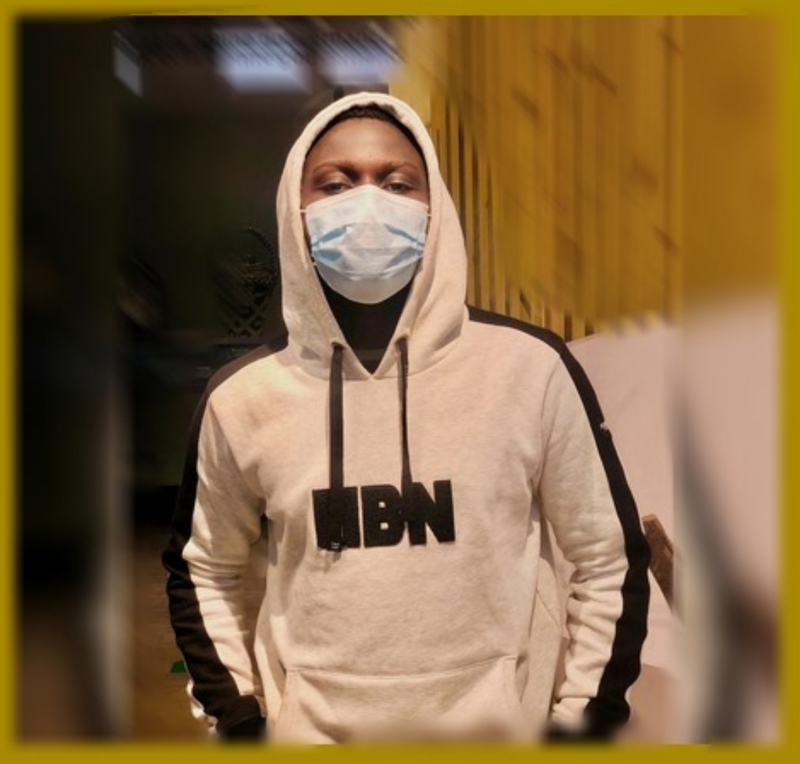
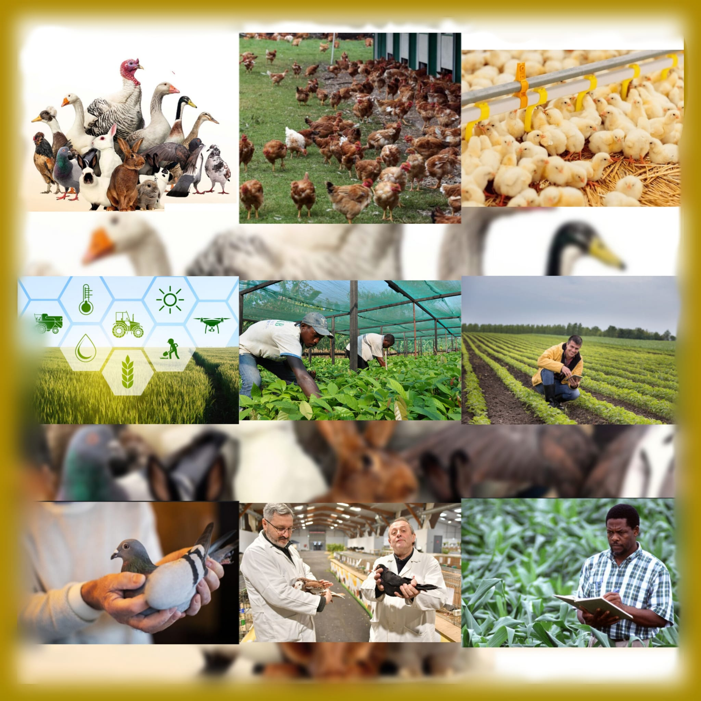

Daris MbauEtudiant en réseaux et télécommunications à IUT de colmar
En l'an 2005, à Kinshasa, en République Démocratique du Congo, a débuté mon parcours. Les premières pages de mon histoire ont été marquées par l'absence, d'abord de mon père en 2011, qui s'est dirigé vers la France, puis de ma mère en 2016. Durant cette période, moi et mes frères avons partagé le toit de ma tante. L'absence parentale a créé un vide significatif, avec de nombreux événements qui ont jalonné cette période. Cependant, au lieu de laisser ces circonstances être une raison de baisser les bras, elles ont servi d'enseignement, façonnant ma compréhension de ce que signifie être un homme.
Mon éducation au collège technique Don Bosco a été le creuset de ma curiosité et de ma soif d'apprendre. Après l'obtention de mon diplôme en Électronique, l'étape suivante a été de me plonger davantage dans le monde de l'informatique. J'ai entrepris de poursuivre mes études en intégrant la formation Cisco IT, une décision cruciale qui a contribué à développer ma compréhension du domaine.
En 2022, l'appel à rejoindre mes parents en France s'est présenté. Malgré des années de séparation, plus d'une décennie sans mon père et plusieurs années sans ma mère, la décision de tout laisser derrière moi, moi et mes frères, pour les retrouver en France a été immédiate. La joie indescriptible de ces retrouvailles a symbolisé un renouveau dans nos vies.
Avec le désir de poursuivre mes études dans le domaine informatique, plus précisément dans les réseaux, j'ai intégré le BUT Réseaux et Télécommunications.

C'est le début d'une nouvelle aventure excitante dans ma vie d'étudiant.
Cependant, je n'ai pas encore pris le temps de réfléchir sérieusement à ce que je pourrais faire après avoir terminé le BUT. J'envisage peut-être de me lancer dans le monde professionnel. En ce moment, je m'efforce de construire des bases solides dans le domaine des réseaux et de me développer. Les débuts ont été difficiles, et honnêtement, un certain manque de confiance en moi m'a ralenti au début, me faisant douter de mon potentiel. Mais je reprends confiance. Je crois en ma capacité à aller jusqu'au bout de ce parcours...
Depuis petit, j'ai toujours voulu travailler dans des domaines concrets et pratiques. Ce parcours correspond parfaitement à ce que je veux et m'interresse fortement, je me vois pas autrement.
J'aimerais quand même déposer ça ici, ce projet extra-professionnel que me tient à cœur, il s'agit de l'agriculture, de l'aviculture et de la colombiculture que m’a été introduit par mes grands-parents. Ces activités permettent de créer un équilibre avec la nature, ça apporte une compréhension unique du cycle de la nature, offrent des leçons sur la façon dont tout est connecté.
L’idée de cultiver la terre, d’élever des animaux, surtout des oiseaux, me plait. L’agriculture nous met en lien direct avec la terre. L’aviculture, c’est l’art de prendre soin des oiseaux, peut-être des poulets, canards, ou autres. Mais la colombiculture, c’est spécialement dédié aux pigeons.
J’étais particulièrement influencé par mes grands-parents, une influence précieuse et inspirante ! Les enseignements et les expériences partagés ont façonné une vision. C’est un hommage à leur impact sur ma vie…
Maintenant, je planifie soigneusement un projet sur ces activités en apportant non seulement des avantages personnels comme l’ont fait mes grands-parents mais en contribuant également à la communauté et à l’environnement. Toutefois c’est un projet à long terme, j’y réfléchis, j’élabore quelques techniques de mise en place, sachant que je ne le réaliserais pas aujourd’hui.
